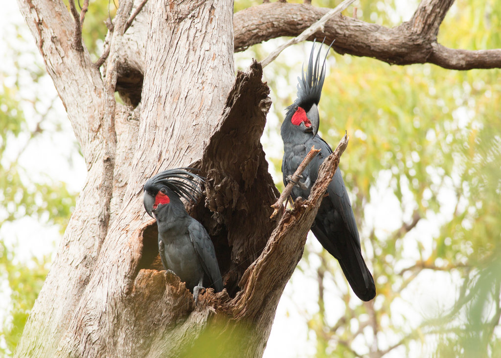

کاکادو یه طوطی باهوش و بسیار زیباست که بخاطر کاکل زرد و بدن سفیدش از طوطی های دیگه متمایزه. با ما در این مقاله همراه باشین تا شمارو با طوطی کاکاتو، پرنده ای فوق العاده باهوش، آکروبات باز و احساساتی که تاج منحصر به فرد داره آشنا کنیم.
تاریخچه و زادگاه کاکادو
طوطی کاکادو (Cockatoo) متعلق به خانواده ی کاکاتوئیده (Cacatuidae) هست که ۲۱ گونه از این پرنده های جذاب رو به خودش اختصاص داده. این پرنده ها اصالتا مربوط به استرالازیا هستند که کشورهایی مثل استرالیا، نیوزیلند، جزیره ی گینه نو، اندونزی و جزیره ی سولومون رو دربرمیگیرن.
کاکاتوها خودشونو تقریبا با هرنوع جنگلی تطبیق میدن؛ از اوکالیپتوس گرفته تا کاج، صنوبر و جنگلهای بارانی. اونارو حتی در دامنه ی کوه، اطراف گیاهان خانواده شاه پسند ومزارع هم پیدا میکنین.
جالبه بدونین که مردم بعضی از مناطق محلی استرایا، اومدن کاکادوی سیاه دم قرمز رو نشونه ی بارش باران میدونن و براشون خوش یمنه و یکجور خوشآمدگویی به حساب میاد.

اسم کاکاتو برخلاف زادگاهش که استرالیایی هست، از کلمه ی مالزیایی به نام Kakatula گرفته شده که معانی مختلفی مثل طوطی بزرگ، پدر پیر و نیشگون گیرنده داره که اکثرا براساس ویژگیهای ظاهریش گفته شدن.
تو گروههای خلافکار استرالیایی، کسی که موقع انجام کارای غیرقانونی مراقب گروه و “بپا” هست رو بهش کاکادو یا Cockatoo میگن!

عمر این پرنده خصوصا اگه در شرایط اسارت نگهداری بشه میتونه با انسان برابری کنه و اندازه ی ۶۰ سال یا حتی بیشتر کنارتون پیر بشه. حتی بعضی از کاکادوها در باغ وحش هستن که بیشتر از یک قرن عمر کردن!
یه سریال حدودای سال ۱۹۷۰ به نام Baretta بود که کاکاتویی به نام Lalah توش نقش آفرینی کرده. از اون موقع بود که نگهداری این پرنده ی دست آموز خیلی شایع شد و همین باعث شد که جمعیتشون در طبیعت به شدت کاهش پیدا کنه. تقریبا گونه های اندونزیایی منقرض شدن و گونه ی فیلیپینی و تاج زردها هم در خطر جدی قرار گرفتن.
ظاهر طوطی کاکاتو
۲۱ گونه ی خانواده ی کاکاتوئیده، در اندازه و سایزهای مختلف وجود دارن؛ به ترتیب بلند قد ترینشون کاکاتوی سیاه دم قرمز با قد cm 65 و کوتاه قد ترینشون کاکادوی سولومون و فیلیپین با قد ۳۰ cm هستن. از لحاظ وزنی کاکادوی پالم (Palm) سنگین وزن ترین با ۱ kg وزن، و کورلای تانیمبار(Tanimbar Corella) سبک وزن ترین با وزن ۰.۳ kg هستن.
این طوطی ها تنوع رنگی از مشکی و طوسی تا صورتی و سفید دارن و عمدتا دسته بندیشون تو دو گروه کاکادوهای سیاه و سفید انجام میشه.
ویژگی منحصر به فرد اون ها، داشتن تاج متحرک هست که میتونن احساسات مختلفشونو با حرکت دادن و باز کردن این تاج نشون بدن و بتونن با محیط اطرافشون ارتباط برقرار کنن.
شاید این ویژگی شمارو یاد یه طوطی سان دیگه بندازه که نگهداری ازش خیلی شایع هست، درست فهمیدین؛ عروس هلندی! درواقع عروس هلندی نسخه ی لاغرتر کاکادو هست با این تفاوت که دمش بلندتره.
اگر دوست دارین از عروس هلندی مراقبت کنین پیشنهاد میدیم مقاله نگهداری عروس هلندی رو حتما مطالعه کنید.
یکی دیگه از طوطی سانان به نام پاراکیت شاخدار نیوکالدونیایی هم هست که این ویژگی رو داره با این تفاوت که برخلاف کاکاتو و عروس هلندی، یک تاج واقعی و متحرک نیست، صرفا تعدادی پرهای سر رشد بیشتری داشته و بلندتر شدن که ظاهر تاج مانند داده بهشون.


ویژگی منحصر به فرد دیگه ی این طوطی ها حالت خاص منقار پایینشون هست که نوکش بجای یکی، دوتا انتها داره و درواقع یک حالت U شکل از نوک منقار پایینی حذف شده و این باعث میشه که منقارشون خیلی قوی باشه و از اون طرف گازهایی که میگیرن هم خیلی دردناکتر باشه!
درست مثل انسان که دستهاش برای کارهای روزمره به کارش میان، پاهای این پرنده همچین معنیای براشون داره و به اونا کمک میکنه که بتونن مواقعی که پرواز لابلای درختای پر شاخ و برگ براشون سخته به راحتی از درخت بالا برن، غذارو تو دستشون (پاشون درواقع!) بگیرن و به راحتی بتونن تعادلشونو حفظ کنن.
برخلاف اکثر آدما که راست دست هستن، کاکاتوها اکثرا چپ دستن (پا درواقع!)
برخلاف اکثر پرنده ها که بافت خاصی رو در پرهاشون دارن برای نشون دادن رنگ و منعکس کردنش در نور، کاکادوها این ویژگی رو ندارن. حتی غده های روغنی مخصوص تمیز کردن پرهاشون ندارن ولی درعوض پرهای ریزی دارن که از تجزیه ی کرک بوجود میان و با اونا از پرهاشون حفاظت میکنن. این ویژگیشون باعث میشه برای افرادی که آلرژی دارن گزینه ی مناسبی نباشن.

ویژگیهای شخصیتی و رفتاری طوطی کاکادو
| اجتماعی و احساساتی | این طوطی یکی از اجتماعی ترین و احساساتی ترین طوطی سانان هست که اونو یه پرنده ی دوست داشتنی ولی زورگو میکنه. توجهی که کاکادو میطلبه اونو دقیقا شبیه یه بچه ی ۲ ساله میکنه!
با اینکه مناسب خانواده ها با کودک هست احتمال حسادتش به نوزاد یا کودکای کم سن باشه پس حتما نظارت داشته باشین. اون حتی با پرنده های اجتماعی دیگه و حیوانات خانگی دیگه کنار میاد.
|
| محتاج توجه | بیشتر از طوطیهای دیگه لازمه براش وقت بذارین و حد و حدودشو بهش نشون بدین، وگرنه هر دقیقه برای جلب توجهتون شروع میکنه به جیغ زدن.
|
| خرابکار | کاکادو از اون دسته پرنده هایی هست که عاشق جویدن و خرابکاریه و براش مهم نیست که میز چوبی آنتیکی که دارین چقدر براتون ارزش داره، اگه براش امکانات کافیو فراهم نکنین حتی به اون میز هم رحم نمیکنه!
اون حتی موقع غذا خوردن هم شلخته بازی درمیاره و هرچی بیشتر سعی کنین جلوشو بگیرین بیشتر به چالش کشیده میشه که خرابکاری و پخش و پلا کنه.
|
| تنوع طلب | عاشق تنوعه و هرچی بیشتر به غذا و اسباب بازیاش تنوع بدین، کاکاتو بیشتر ترغیب میشه که ازشون استفاده کنه.
|
| پرحرف | خیلی پر سرو صدا هست و به عنوان یکی از جیغ جیغو ترین طوطیها شناخته شده.صدای خیلی بلندی داره و همین بهش این امکانو میده که در طبیعت بتونه از فواصل دور با بقیه ارتباط برقرار کنه. بیشتر از همه موقع طلوع، غروب و مواقعی که خیلی سرخوشه سروصدا میکنه. طوطی کاکادو تنها طوطی سان پر حرف نیست و باید بگم که طوطی هایی با نژادهای مختلفی هم هستن که سر و صدای زیادی تولید می کنن. برای شناخت این طوطی های حراف می تونین مقاله طوطی های سخنگو رو مطالعه کنید و بیشتر با دنیای طوطی های سخنگو آشنا بشین.
|
| باهوش | کاکادوها به شدت پرنده های باهوشی هستن، قابلیت یادگیری تعدادی کلمه و اصطلاح به همراه کلی تردستی رو دارن و دقیقا میدونن برای اینکه به خواستشون برسن چجوری رفتار کنن!
اونا عاشق چالشهای فکری هستن و با یکم وقت گذاشتن میتونن یاد بگیرن در قفس و قفلشو باز کنن. |
| یک دنده | کاکادو “نه” حالیش نمیشه و وقتی موقع خرابکاری نه بشنوه اینطور برداشت میکنه که خرابکاریشو باید به موقعی موکول کنه که شما حواستون نباشه! |
| دمدمی مزاج | موقعی که کاکادو خصوصا پا به سن میذاره مثل پیرمرد پیرزنا غرغرو میشه، زود قاطی میکنه و شروع میکنه مثل همیشه جیغ زدن. |
| بازیگوش و آکروبات باز | کاکادو ذاتا پرنده ی کنجکاویه. عاشق انجام دادن حرکات عجیب و غریبه؛ پس تعجب نکنین اگه دیدین کاکادوتون برعکس از تاب آویزون شده! |

انواع طوطی کاکادو
همونطور که قبلتر گفتم، کاکادوها تا الان ۲۱ گونه رو به خودشون اختصاص دادن و در این قسمت، ۱۰ گونه ی برتر و پرطرفدارترش رو بهتون معرفی میکنم:
Bare Eyed Cockatoo/Little Corella (کاکادو چشم روشن/ کورلای کوچک)
این طوطی بامزه، بازیگوش و باهوشه. از بقیه کوچیکتره (۳۵.۵ تا ۴۳ سانتیمتر) و همین باعث میشه مناسب خانواده های کودک دار و افرادی که فضای کافی برای نگهداریشو ندارن باشه.
منقار این پرنده طوسی رنگه و حلقه ای طوسی آبی دور چشمش داره.

Black Palm Cockatoo (کاکادو نخلی سیاه)
این نوع از کاکاتوها همونطور که از اسمش معلومه تو دسته ی کاکادوهای سیاه قرار داره. بزرگ (۵۸.۵ سانتیمتر)، قوی و جسور هست برای همین صاحبش باید تجربه ی زیادی از نگهداری طوطی داشته باشه چون برای اهلی موندن نیاز داره که خیلی قاطعانه و جدی بهش آموزش داده بشه.
بدن این کاکادو دودی، پا و منقارش طوسی رنگه، تاجش بلنده و روی گونه هاش قسمتای قرمز رنگ داره.
یک ویژگی منحصر به فرد کاکادوی پالم قسمت بدون پر زیر چشم هست که قرمز رنگه و موقع هیجان به قرمز-نارنجی و سرخابی تغییر رنگ میده.

Citron Crested Cockatoo (کاکادو تاج لیمویی)
این گروه از بقیه ی کاکادوها ساکت تره. شخصیت بزرگی دارن که درکنار کنجکاو و بازیگوش بودن عاشق بودن کنار صاحبشه.
بدنشون سفیده و این باعث میشه گونه های نارنجیش به چشم بیان، زیر دم و بالش زردرنگه، منقار و پای طوسی داره و همونطور که از اسمش معلومه تاجش به رنگ نارنجی هست.

Sulphur Crested Cockatoo (کاکادو تاج سولفوری)
معروف ترین کاکادوی گروه سفید هستن که بسیار باهوشن که نیاز به فضای زیادی برای فعالیت دارن. اگه توجه و امکانات کافی نداشته باشن شروع میکنن به پرکنی. بدنشون سفیده که منقار سیاه و تاج زردرنگشون بهش رنگ داده.

Goffin Cockatoo/Tanimbar Corella (کاکادو گافین/ کورلای تانیمبار)
کاکاتویی هست که نیاز روزانه داره برای ارتباطات اجتماعی و اگه به اندازه ی کافی بهش توجه نشه مشکلات رفتاری پیدا میکنه.
درعین باهوش بودنش یکم موذی هم هست برای همین صاحبش حتما باید تجربه ی نگهداری طوطیهای بزرگ رو داشته باشه.
بدنش سفیده، دو طرف نوکش به همراه تاجش صورتی رنگن، زیر بالش زرد و پاها و منقارش طوسی رنگن.

Major Mitchell’s Cockatoo (کاکادو میجور میشل یا کاکل صورتی)
از کاکادوهای جذاب و باهوش هست که تاج رنگارنگ داره، نیاز به مراقبت ویژه و محدوده ی بزرگ داره که هر فردی نمیتونه این امکانو براش فراهم کنه، صاحبش هم ترجیحا باید تجربه ی نگهداری طوطی بزرگ رو داشته باشه.
بدن این طوطی کاکادو سفید-صورتی، زیرشکم، بال و دور گردنش صورتی رنگه و تاج زرد نارنجی داره که نوکش سفیده.
این کاکادوها به شدت قلمرو طلب و مستعد پرخاشگرین در حدی که به جفت های دیگه اجازه ی جفتگیری نمیدن!
Moluccan/Salmon crested Cockatoo (کاکادو ملوکان/ تاج گلبهی)
این کاکادو با اشتیاق و احساساتیه، به نسبت بقیه با صاحبش پیوند عمیق تری ایجاد میکنه و به شدت بغلیه. برای همین مناسب افرادی هست که اکثر وقتشون رو خونه هستن.
بدنش سفید رنگه، پایه ی تاجش صورتی، زیر بال زرد-هلویی و گا و منقارش سیاه رنگن.
Rose Breasted/Galah Cockatoo (کاکادو سینه سرخ یا گالا)
از شایع ترین گونه های استرالیایی هست که با مراقبت خوب میتونه تا ۸۰ سال عمر کنه. پرنده ای جسوره و درعین حال رفتار دوستانه داره. جزو تنها کاکادوهایی هست که برای بستر لونش از برگ استفاده میکنه. سینه ی صورتی رنگ داره، تاج سفید-صورتی، قسمت پشت بال و دم به همراه پا طوسی رنگ هستن.
این طوطی کاکادو به همراه میجور میچل از اون کاکادوهایی هستن که اگه اتفاق ناخوشایندی رو با فردی تجربه کنن تقریبا همیشه یادشون میمونه و از اون فرد بدشون میاد.

کاکادوی گالا از خشن ترین کاکادوهای سفید هستن و برای همین توصیه میشه که غیر از دوره ی تولیدمثلی جفت ها جدا از هم نگهداری بشن.
Umbrella/White Cockatoo (کاکادو چتری/ سفید)
این طوطی کاکادو خصوصا اگه از زمان جوجه بودنش بهش دستی غذا داده بشه میتونه خیلی دوستانه و خوش برخورد باشه، خیلی راحت ترفند و تردستی یاد میگیره، تقلید خوبی داره، به شدت اجتماعی و احساساتیه و برای همین نسبت به صاحبش حساس برخورد میکنه، بیشتر مناسب خانواده هایی هست که کودکاشون یکم سن بیشتری داشته باشن. بدین این طوطی سفیده، بال و دمش زرد کمرنگ، تاج بلند سفید و منقار سیاهی داره.

Long Billed Cockatoo/Slender Billed Corella (کاکادو/کورلای منقار بلند)
کاکادوهای خاص استرالیا که نیازهاشون دقیقا اندازه ی دوستای بزرگترشونه و به شدت نیاز دارن که با صاحبشون وقت بگذرونن. بدن سفید با هاله های صورتی رنگ دارن، بالای نوک و گردنشون صورتی رنگه و برخلاف بقیه ی کاکادوها نوک بلندی دارن و تاجشون کوتاهه.

معانی مختلف حرکت تاج کاکادوها
| بلند شده | - هشیار و آماده باش - هیجان - جو متشنج |
| نزدیک به پوست سر | - آماده ی حرکت - تحت سلطه (رده و مرتبه ی پایین تر) |
| معمولی | - غذا خوردن - استراحت |
| کمی بلند شده | - صرفا برای گرم کردن (با به دام انداختن هوا) - جلب توجه سایرین به اندازه و سایز خود |
| کاملا بلند و باز شده (پوست سر نمایان شده) | - حمام کردن - خستگی درکردن |

تولید مثل و جوجه های این طوطی بامزه
- خاص ترین روش جلب توجه طوطی کاکادو ماده در دوره ی تولیدمثلی مختص کاکادوی پالم نر هست که با یک تکه چوب روی نشیمنگاه یا لونه ضربه میزنن و با صدای طبل مانندی که ایجاد میشه قلمروگذاری و پیوند جفت شدنشون رو به بقیه اعلام میکنن. این رفتار اوایل صبح و غروب دیده میشه که شروع میکنن به لونه رو چیدن و برای این کار شاخه هارو میجون و غیر از کف لونه حالت مسقف هم برای روزای بارونی درست میکنن.
- کاکاتوهای سفیدی که باهم جفت هستن به ندرت بهم دیگه غذا میدن. تو دوره ی تولیدمثلی خصوصا لون هایی که تاج زردرنگ دارن تاجشون رو برافروخته میکنن و با سرشون حرکات هشت لاتینی انجام میدن.
- اکثر کاکادوهای سیاه ۲-۱ تخم میذارن و به جز گنگ گنگ (Gang gang) بقیه فقط به اولین جوجه ای که از تخم درمیاد غذا میدن! کاکادوهای سیاه بزرگتر مدت زمانی که روی تخم میشینن حدودا یک روز از سفیدا بیشتره. کاکادوهای سفید بین ۴-۲ تخم میذارن که بین هرکدوم ۲ و حتی ۷ روز هم فاصله بوده، بعد از اینکه تخم اول رو میذارن روش میشینن تا حدودا ۲۸ روز بگذره.
- نوع سیاه این طوطی ها به لونه های سر باز بیشتر علاقه دارن که حالت عمودی داشته باشه و روی زمین قرار گرفته باشه درحالیکه طوطی کاکادو سفید اینطور نیستن. برخلاف کاکادوهای سیاه، هردو والد کاکادوهای سفید روی تخم میشینن و مسئولیت نگهداری از جوجه ها بینشون تقسیم میشه.

- پیوندی که بین جفت های این پرنده برقرار میشه اکثرا عمیق و دائمی هست.
- اکثرا کاکادوها بخاطر شرایط اسارت بعد یه مدت تمایل به نگهداری از جوجه هاشون ندارن برای همین توصیه میشه که جوجه هارو جدا کنین و دستی بهشون غذا بدین.
- جوجه های پالم برخلاف اکثر کاکادوها کاملا لخت و بدون کرک هستن و بقیه عموما کرک زرد رنگ بدنشون رو پوشونده. گوش جوجه های کاکادو (بجز پالم) موقع تولد و چشم ها حدود ۲۱-۱۴ روزگی باز میشن.
- جوجه های کاکادوهای سیاه دیرتر از سفیدها از لحاظ تغذیه و نظافت مستقل میشن.( سفیدها در ۱۲ هفتگی و سیاه ها از ۱۶ هفتگی تا حتی یک سالگی)
تو دوره ی تولیدمثلی زیاد به جوجه ها و لونه سر نزنین که احتمال آسیب رسیدن بهشون پایین بیاد.
- تفکیک جنس نر و ماده در کاکادوهای سیاه به نسبت سفیدها راحت تره و در کاکادوهای کوچکتر تقریبا نشدنی! تقریبا برای تفکیک جنسیت لازمه که ۴-۳ سال سن رو داشته باشن.
| کاکادو سیاه نر | منقار سیاه |
| کاکادو سیاه ماده | منقار سفید و عاجی |
| کاکادو سفید نر | عنبیه سیاه یا قهوه ای تیره |
| کاکادو سفید ماده | عنبیه ترکیبی از قهوه ای روشن و قرمز |
| کاکادو نابالغ | - عنبیه طوسی تیره - قسمت بینی تیره - تا چندماهگی شباهت به جنس ماده - پیشانی تعدادی پر طوسی |
تغذیه و نگهداری طوطی کاکادو
تغذیه
در طبیعت کاکادوها گروه های بزرگ و شلوغ ۱۰۰۰-۱۰۰ تایی رو تشکیل میدن که به دنبال مناطقی با غذای زیاد هستن. به همین دلیل خیلی از کشاورزان اونارو آفت مزارع محسوب میکنن.
مثل هر طوطی زینتی دیگه تغذیشون فقط برپایه ی دانه نیست و همیشه توی غذاشون تنوع ایجاد میکنن. در طبیعت کل روز رو به دنبال دانه و مغزیجات، نارگیل و دانه های کشت شده میگردن. بنابراین رژیم غذاییشون ترکیبی از انواع بریها، مغز و ریشه ی گیاهان کشت شده هست.
کاکادوها بخاطراینکه ضرر اقتصادی به کشاورزا میزنن و همیشه جونشون درخطره، همیشه موقع تغذیه ی گروه پرجمعیتشون چند نفر دیده بان دارن که به محض دیدن خطر زنگ هشدارشون رو به صدا درمیارن و کل گروه از اون ناحیه پر میزنن.

تغذیه ی استانداردی که میشه برای طوطی کاکادو تدارک دید بیشترین قسمتش از پلت تشکیل شده که در ادامه با سبزیجات، جوانه ها، حبوبات و میوه میتونین کاملش کنین.
میوه و سبزیجاتی که زیاد براشون استفاده میشه:
- سیب
- گلابی
- پرتقال
- موز
- هلو
- آلو
- کشمش سلطانه
- هویج
- بروکلی
- کاهو
پرنده های بزرگی مثل ماکا، کاکادو(خصوصا سیاه ها و پالم) و کانور چربی ۱۴-۱۲% رو هم اجازه ی مصرف دارن برای همین مغزیجات و دانه های چربی مثل تخمه آفتابگردان رو میتونن مصرف کنن ولی همین چربی برای پرنده های کوچیک تر باید تو محدوده ی ۵-۳% باشه.
بعضی از کاکادوها مثل کاکادوی سیاه دم زرد و گنگ گنگ حشرات زنده و پروتئین حیوانی (از شکار موش) هم مصرف میکنن.
گونه هایی مثل گالا و آمبرلا به شدت مستعد چاقی هستن، بنابراین مقدار دانه در رژیم غذاییشون باید کم باشه. (تخمه آفتابگردان و گلرنگ باید حذف بشن) و درعوض سبزیجات کافی به همراه جوانه ها دراختیارشون باشه.
تا وقتی اصل تنوع رو در غذای کاکادو رعایت کنین، نیازی به استفاده از مکملها و ویتامینها ندارین مگه اینکه تغییری در شرایط کاکادو به وجود اومده باشه یا بهش استرس وارد شده باشه.
تغذیه ی جوجه ها که با سرلاک انجام میشه در هر وعده باید ۱۰-۸% وزن بدنشون سرلاک پرنده بخورن و چینه دانشون حدودا ۶-۴ خالی میشه و آماده ی دریافت وعده ی بعدی هستن.
کاکادوها از اونجا که سابقه خوبی در نگهداری وسایلشون ندارن بهتره که بجای قرار دادن سنگ کلسیم (که در عرض چندثانیه نابودش میکنه) هر هفته یه مقدار از این سنگ رو بصورت پودر شده روی غذاش بپاشین.
نگهداری از طوطی کاکادو
قفس
- قفسی که برای کاکادو باید تهیه کنین از لحاظ اندازه باید امکان فعالیت کافی رو براش فراهم کنه و ترجیحا عریض باشه. همچنین باید دقت کنین که چون منقار قوی ای دارن جنس قفس باید استحکام کافیو داشته باشه از بین جنس ها عموما آهن و استیل بدون رنگ توصیه میشه که با وجود اینکه استیل ارجحه ولی گرونتر هم هست.
- نشیمنگاه ها باید در اندازه و جنس های مختلف دراختیارش قرار بگیرن که سایش کافی برای ناخن ها و سلامت پاهاشون ایجاد بشه. کاکادوها برای خواب نشیمنگاه های مرتفع رو ترجیح میدن.
- از اونجا که کاکادوها پرنده های اجتماعی هستن بهتره که قفسشون جای شلوغ و پر رفتو آمد باشه که بطور زنده در فعالیتای خانوادگی حضور داشته باشه ولی درعین حال باید حواستون باشه که این مکان دور از آشپزخونه باشه.
- هرچه قفسش ارتفاع بیشتری داشته باشه حس امنیت بیشتری به پرنده میده بنابراین ترجیحا جایی باشه که امکان نگاه بالا به پایین به پرنده بده. بهتره که شب روی قفس کاور بندازین.

کاکادوها پروازای قوی دارن اما بخاطر کوتاه بودن دمشون نمیتونن توقف سریع داشته باشن، این باعث میشه که با دیوار برخورد کنن. بهترین کار اینه که پرهای پراوزیشون چیده بشه که در عرض یک سال مجددا رشد میکنن یا اینکه از قلاده و هارنس استفاده کنین.
بازی و سرگرمی
- انواع اسباب بازی ها مثل نردبان، تاب، زنجیرهای بزرگ، شاخه های تازه و اسباب بازی های فکری میتونن کاکادو رو به وجد بیارن. سعی کنین در استفاده از اسباب بازی ها تنوع به خرج بدین که براش یکنواخت نباشه.
- با وجود اینکه کاکادو به شدت توجه و ارتباط میطلبه وقتی که تازه به خونتون میارین نباید حجم زیادی از توجه و احساس رو بهش نشون بدین، بلکه لازمه با اسباب بازی و سرگرمی های کافی درکنار توجه به اندازه، بهش توجه کنین که درمواقع لزوم بتونه خودشو سرگرم کنه.
قیمت انواع طوطی کاکادو
| نوع کاکادو | حدود قیمت |
|---|---|
| تاج زرد | ۳۰ تا ۵۵ میلیون تومان |
| گالا | ۲۵ تا ۳۰ میلیون |
| گوفین | ۲۰ تا ۲۵ میلیون |
| چشم برهنه | ۱۶ تا ۲۰ میلیون |
| جوجه | ۵ تا ۷ میلیون |
| تخم نطفه دار | ۳۰۰ تا ۸۰۰ هزار تومان |
بیماری ها و مشکلات رفتاری کاکادو
بیماریهای رایج کاکادو
کاکادوها درکل پرنده هایی سالم هستن و بنیه ی قوی دارن. و معمولا مشکلاتی که دچارش میشن شامل:
- انگل
- بیماری تنفسی
- چاقی
کاکادوی پالم قابلیت هضمی پایینتر از بقیه ی کاکادوها داره و برای همین اگه مقدار زیادی غذا بهش داده بشه مستعد مشکلات قارچی میشه. بنابراین توصیه میشه مقدار کمی غذا دراختیارش قرار بگیره که بیشترش مایع باشه و تنها ۲۲% غذا خشک و جامد باشه.
مشکلات رفتاری طوطی کاکادو
از شایع ترین مشکلات رفتاری که این پرنده دچارش میشن پرکنی و سروصدای زیاد بخاطر رسیدگی و توجه ناکافی هست.
مهمترین ویژگی کاکادوهای نر اینه که بعضی مواقع خاص به شدت پرخاشگر میشن و میتونن به ماده آسیب جدی وارد کنن. مواردی که میتونه به عنوان محرک برای نرها عمل کنه:
- ماده جنس نر رو نپذیره
- زمانی که ماده روی تخم نشسته و نر تمایل به جفتگیری داره
- خصوصا فصل بهار و اوایل تابستان
آسیب هایی که به ماده وارد میشه معمولا بدون هشدار قبلی هست، راه های پیشگیری:
- لونه های T شکل که چند راه ورود و خروج دارن.
- جدا کردن قفس ها
- چیدن پرهای یک یا هردو بال جنس نر و فضای کافی برای فرار جنس ماده
البته چیدن پرهای یک بال جلوی کاکادوهای نر رو نمیگیره و با ذکاوت با بال سالمشون به ماده ضربه میزنن و یا به بهانه ی تمیز کردن نزدیک میشن و پرهای پروازی ماده رو میچینن.
- چک کردن روزانه ی قفس و لونه که نر جلوی غذا خوردن ماده رو نگرفته باشه
- کوتاه کردن یا گرد کردن نوک منقار نر (ترجیحا قبل از دوره ی تولیدمثلی در پاییز انجام شود)

برای آشنا شدن با بقیه طوطیهای سخنگو این مطالب هم بخونین:
نظر شما درباره طوطی کاکادو چیه؟
چقدر با این پرنده ای که معرفی کردیم ارتباط گرفتین؟ به نظرتون نگهداری کاکادو چقدر سخت میتونه باشه؟ اگه تجربه ی نگهداری از این پرنده ی شیطون رو داشتین ممنون میشیم برامون بگین که چقدر از این اطلاعات آگاه بودین.


من عاشق این هام ولی حیف که خیلی گرون هستن ولی اگر پولش رو گیر بیارم بی معطلی یکی میخرم از بس که این ها ناز هستن
سلام خسته نباشید یه سوال داشتم:
من یه دونه کاکادو تاج زرد پیدا کردم که دستی و جنسیتشم نره و یک سالشه و سخنگو و صحیح سالمه
(البته طبقه گفته های فروشنده.که میگه به یه خانواده خوب میدمش)
و قیمتش بسیار پایین گذاشته به اسم واگذاری میدتش(۳میلیون که فکر کنم خیلی پایینه) تو عکسم سرحال به نظرم مشکل خاصی نداره به نظرتون ممکنه مشکلی داشته باشه و اگه هست میشه بگید به چه نکاتی باید توجه کنم؟
سلام اشکان عزیز،
میتونین برای بررسی دستی بودنش درخواست کنین که فیلمم بفرستن براتون.
همیشه هم توصیه میشه بعد خرید حیوون خونگی حتما اول از همه چک آپ پیش دامپزشک متخصص ببرین که وضعیت سلامتیش و بیماریای مهمشون بررسی بشه.